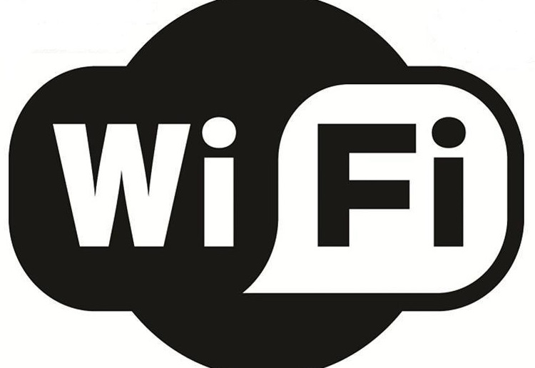

RIVIERA CLUB
Início
Atrações
Valores
Localização
Contato
acebook

Endereço: Rua Edgar ajax dos reis, 754 fundos - Jardim toselar
Cidade: Birigui - SP
Referência: Próximo da Padaria Milanesa, Escola Ricardo Peruzzo, Lanchonete Mané Simpatia
The quickest Map generator on the web! Clique aqui! Visite o nosso site
noleggio auto Milano